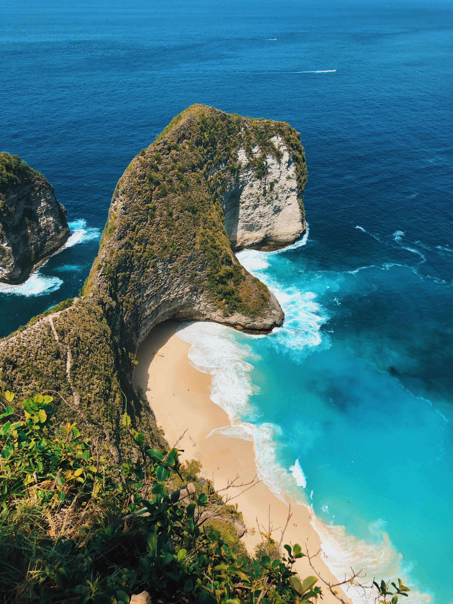

Santorini is renowned for its stunning landscapes, beautiful beaches, and iconic white-washed buildings with blue domes. The island is a popular destination for travelers seeking both relaxation and natural beauty.
However, camping is not allowed on the island, except in organized campsites. Wild camping or setting up tents on beaches or public areas is prohibited, you can see the details in Tips for wild camping in Greece.
Photo Gallery
Santorini is known for its iconic blue-domed churches with whitewashed walls.The caldera offers some of the most dramatic views on the island.Known for its striking red cliffs and dark sand, Red Beach is a unique and picturesque spot for sunbathing and swimming.Santorini is known for its wineries, and many offer tours and tastings.
Swizerland
Geographical Location: Europe
More than 60 percent of Switzerland is mountainous and a quarter of it is covered with forests. The country boasts breathtaking mountains, picturesque lakes and charming cities and towns that are full of culture and history. Switzerland is landlocked and situated on the crossroads of northern and southern Europe.
Photo Gallery
One of the most iconic mountains in the Swiss Alps, the Matterhorn is a symbol of Switzerland.Whether you're visiting in summer or winter, you can explore the stunning mountain scenery, go skiing, hiking, or simply enjoy the views.A charming city in central Switzerland, Lucerne is known for its preserved medieval architecture.Located in Zermatt, this museum tells the history of the Matterhorn and mountaineering in the area.
Tokyo
Geographical Location: Asian
Tokyo, the vibrant capital of Japan, is a city with a rich blend of tradition and modernity.
Many popular restaurants in Tokyo require reservations, especially fine dining establishments and small, intimate venues. It's advisable to make a reservation in advance to secure a table.
Photo Gallery
An iconic symbol of Tokyo, this communications tower offers panoramic views of the city.Known as the world's busiest pedestrian crossing, Shibuya Crossing is a must-see spectacle. It's particularly impressive during rush hours.This district is a paradise for tech enthusiasts and anime fans, with countless electronics stores and shops selling manga and anime merchandise. This modern complex in Roppongi includes a shopping mall, museums, an observation deck with fantastic city views, and a lively nightlife scene.This peaceful garden offers a serene escape from the hustle and bustle of Shinjuku.
Prague
Geographical Location: Europe
Prague is often referred to as the "City of a Hundred Spires" due to its numerous historic churches and buildings that grace its skyline. This picturesque city is known for its rich history, stunning architecture, and vibrant culture.
Photo Gallery
One of the largest castle complexes in the world, Prague Castle is a must-visit.This iconic stone bridge adorned with statues spans the Vltava River, connecting the Old Town and the Lesser Town. It's a favorite spot for both tourists and locals, offering beautiful views and a lively atmosphere.This stunning Gothic cathedral is part of Prague Castle and is known for its intricate architecture, stained glass windows, and the tomb of St. Wenceslas.The drive to Lamar Valley requires some dangerous roads. But the result is amazing sunset views.This modern architectural gem stands out in Prague's historic landscape with its unique, curvy design.

Bali
Geographical Location: Asia
Bali is an island and province located in the country of Indonesia. It is situated in Southeast Asia, between the islands of Java and Lombok. Bali is a popular tourist destination known for its stunning beaches, lush landscapes, rich culture, and vibrant arts scene.
Photo Gallery
This sacred monkey sanctuary is located in the heart of Ubud. Visitors can observe and interact with playful macaque monkeys while exploring the lush forest.These beautiful rice terraces near Ubud are a popular sightseeing spot.For adventure seekers, the Bali Swing is a popular attraction. It offers a chance to swing high above the jungle canopy, providing exhilarating views of the surrounding landscape.One of Bali's most famous beaches, Kuta Beach, is known for its golden sands, great surf, and vibrant nightlife.Tanah Lot is built on a rock formation in the ocean. It's especially popular for its sunset views, and during low tide, you can walk to the temple.
Spain/h2>
Geographical Location: Europe
Spain is a storied country of stone castles, snowcapped mountains, vast monuments, and sophisticated cities, all of which have made it a favoured travel destination. The country is geographically and culturally diverse. Its heartland is the Meseta, a broad central plateau half a mile above sea level.
Photo Gallery
This iconic basilica, designed by architect Antoni Gaudí, is known for its unique and intricate design. It's one of the most famous landmarks in Barcelona and is still under construction, making it a true work of art.Another masterpiece by Antoni Gaudí, Park Güell is a colorful and whimsical public park with stunning mosaics, sculptures, and architectural elements.The Alhambra is a breathtaking palace and fortress complex that showcases the finest examples of Islamic architecture in Spain. The Prado Museum is one of the most important art museums in the world, featuring an extensive collection of European art, including works by renowned artists like Velázquez, Goya, and El Greco.The Royal Palace is the official residence of the Spanish royal family, and its opulent interior and grand architecture make it a significant cultural and historical site.